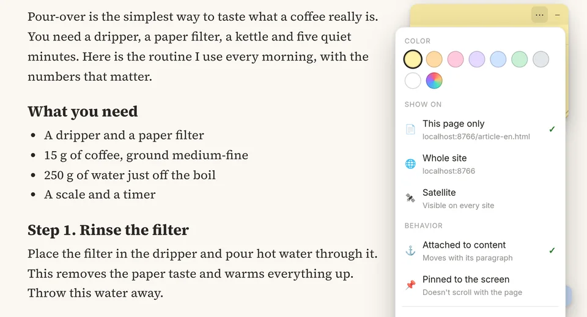
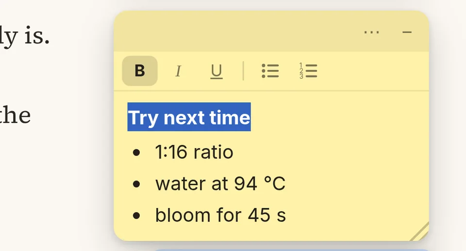
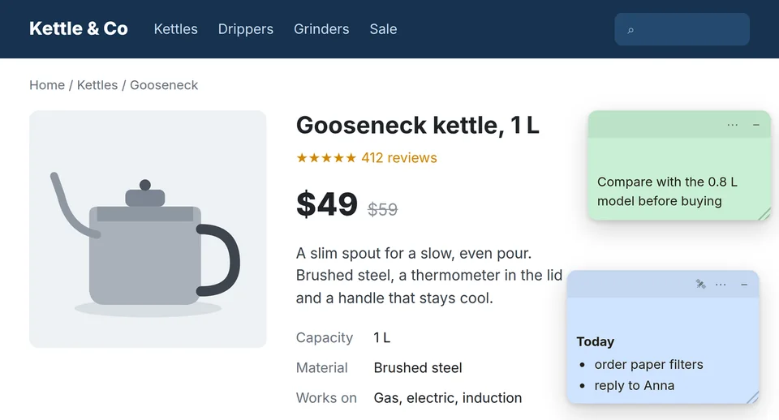
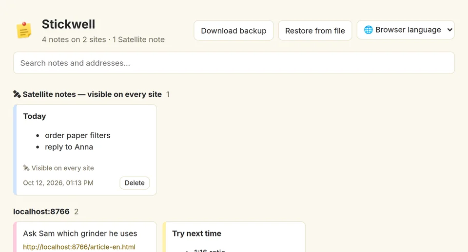

Notes stick to the content
Stickwell remembers the paragraph or picture a note belongs to, not screen pixels. Resize the window, switch monitors, let the page load more content — the note stays beside its paragraph.
Leave a note next to any paragraph on any website. Come back tomorrow, open it in a narrower window, let the site add a banner on top — the note is still beside the same paragraph.
Free · No account · Your notes never leave your browser
Stickwell remembers the paragraph or picture a note belongs to, not screen pixels. Resize the window, switch monitors, let the page load more content — the note stays beside its paragraph.
Everything saves as you type. You can download a backup file at any time, and if a page changes so much that a note’s paragraph is gone, Stickwell tells you instead of hiding it.
No account, no servers, no analytics, no ads. That matters when an extension can see every page you open.

Eight paper colors plus any color you like. Show a note on this page only or on the whole site. Attach it to the content, or pin it to the screen so it stays put while you scroll.

Format the way you think: headings in bold, steps as a list. Pasted text arrives clean, without the website’s styles.

A Satellite note shows up on every site you open — a shopping list, today’s to-dos, a reminder you don’t want to lose sight of.

Search every note by text or address, jump to the page it was left on, back everything up to a file and restore it on another computer.
Researchers and students reading papers, technical writers and analysts working through docs, support and QA teams who check the same screens every day.
Yes. Stickwell is free and has no ads. If sync between devices is added one day, it will be an optional extra.
Only in your browser, in its storage for extensions. Stickwell makes no network requests. Read the privacy policy for the details.
So that it can show your notes on whatever page you open and find the paragraph each note is attached to. It doesn’t edit the page’s own text, links or forms and doesn’t record what you type on the site.
Stickwell looks for the paragraph by its position in the page and by the beginning of its text. If the paragraph is gone, the note stays at its last position and is marked “Original spot on the page not found”, so you can move it.
Not automatically yet. Download a backup on the “All notes” page and restore it on the other computer.
Chrome and other browsers that install extensions from the Chrome Web Store, such as Edge, Brave, Opera and Yandex Browser. Firefox and Safari aren’t supported yet.
English, Spanish, German, Chinese (Simplified) and Russian. Stickwell follows your browser’s language, and you can switch it in the extension menu.
The browser deletes them together with the extension. Download a backup first if you want to keep them.
Tell us which page it happened on and what you expected to see — that’s usually enough to fix it.